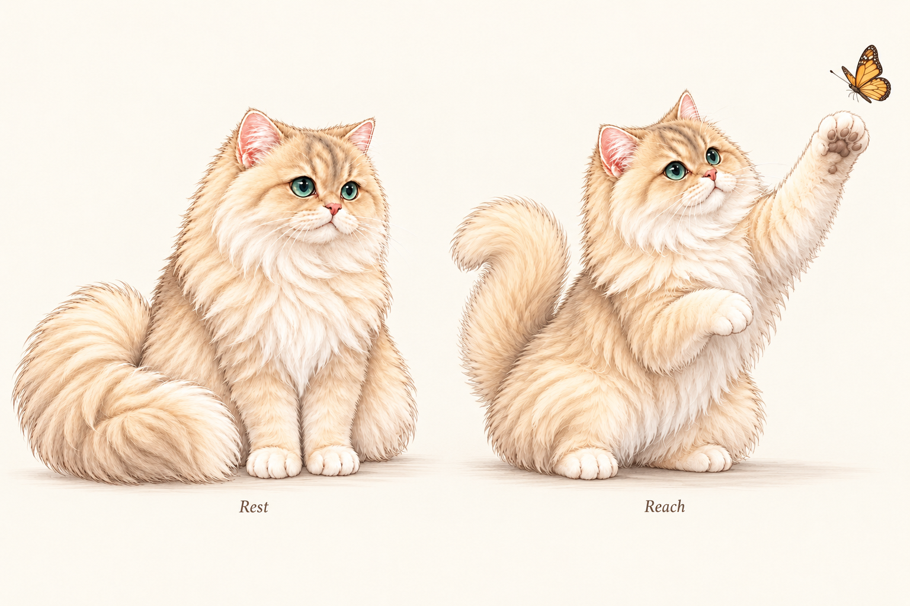
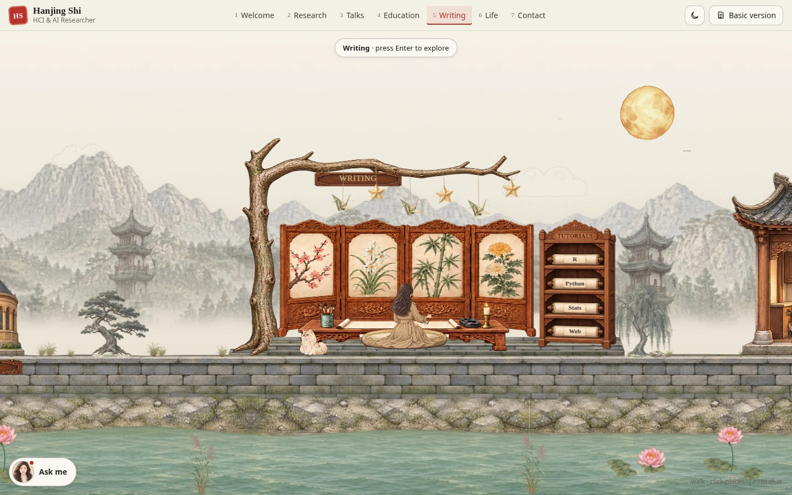
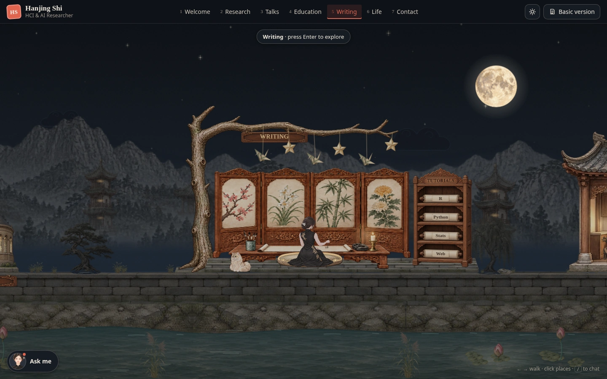
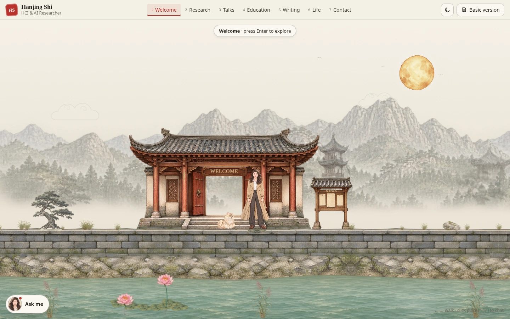
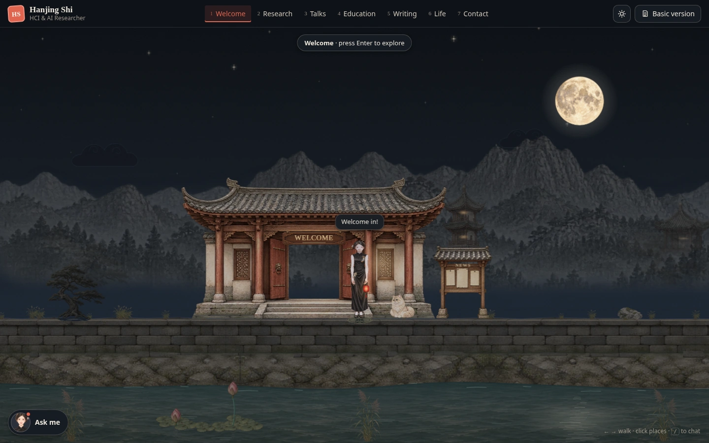
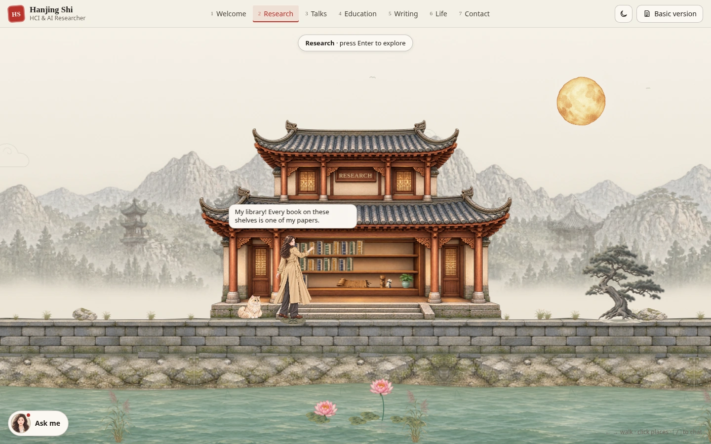
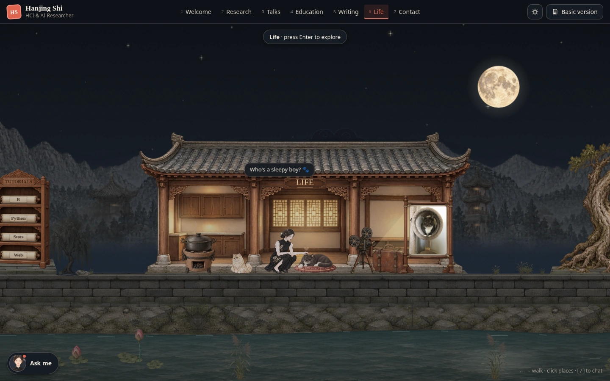
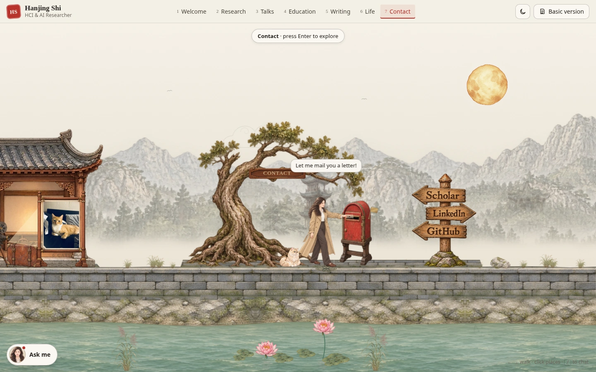

A walk and a little curiosity.
Enter the interactive world →Day and night walks, JinBingBing's curious paw, and a warm invitation to the writing desk. These clips were captured in a cloud browser; try the interactive world to see the movement on your device.
A walk together
A happy little follower
A curious paw

An invitation to write




A gentle hello to XiaoHei
Seven places, day and night
Small gold details mark the places you can explore: carved stone, book foil, wooden rails, metal edges and cushion embroidery.










